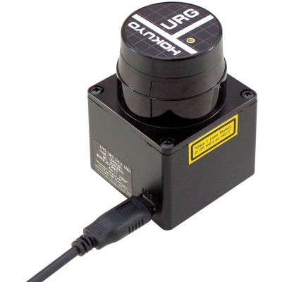
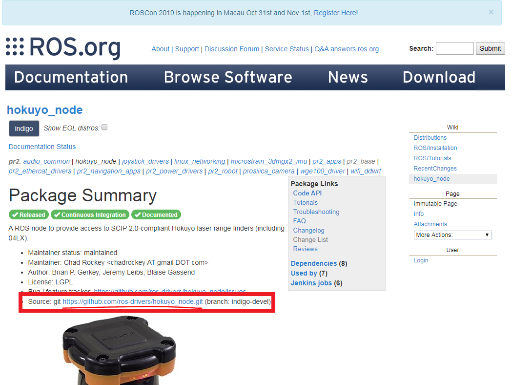

การติดตั้งโปรแกรม Package
การติดตั้ง Package ของ hokuyo sensor scanner

Product Highlightse ของ hokuyo sensor scanner
Description
- Hokuyo's URG-04LX-UG01 detectable range is 20mm to 5600mm
- 100msec/scan
- 5V operating voltage
- 240° area scanning range with 0.36° angular resolution
- USB cable not included
ขั้นตอนการติดตั้ง Package Hokuyo
- ให้เข้าไปที่เว็บไซต์ http://wiki.ros.org/hokuyo_node
- คลิกแหล่งเก็บข้อมูลของโปรแกรม ดังภาพ หรือคลิกที่ลิงค์ https://github.com/ros-drivers/hokuyo_node 
- เปิด Terminal ขึ้นมาโดยกด
ctrl+alt+Tแล้วคัดลอกคำสั่งลงไป
cd /catkin_ws/src
git clone https://github.com/ros-drivers/hokuyo_node.git
cd ..
catkin_make
source /devel/setup.bash
- Run Program ด้วยคำสั่ง